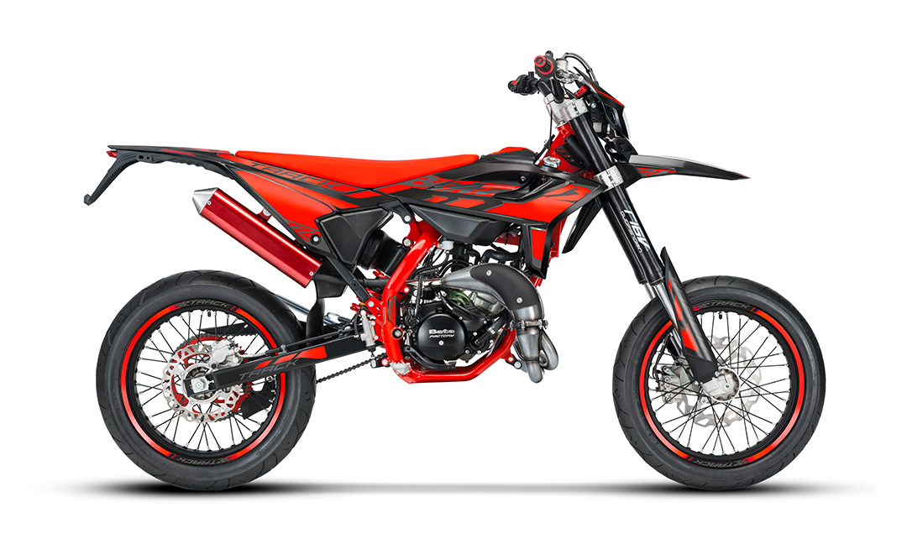
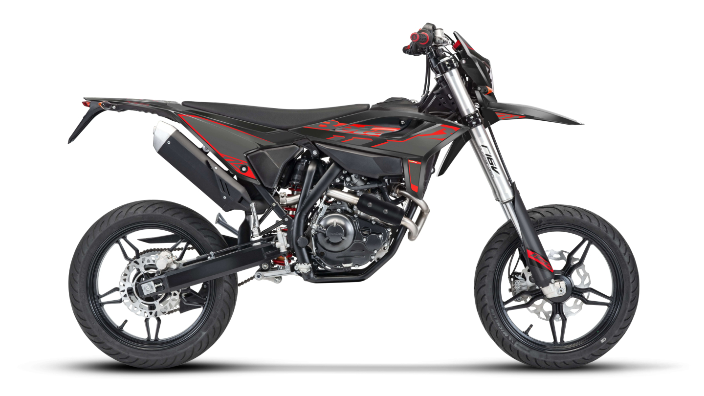
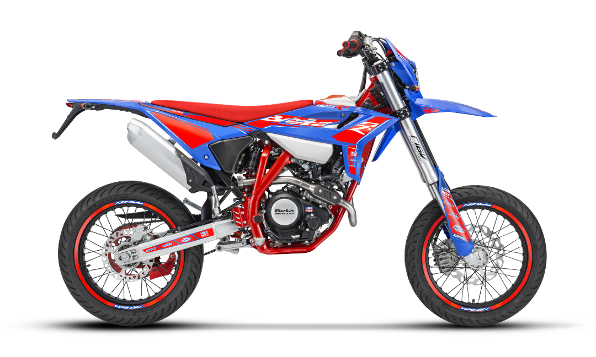

Il top della gamma 50cc. Versione Track con forcelle a steli rovesciati, cerchi a raggi neri e una livrea aggressiva. Il motore 2 tempi offre scatti fulminei per il traffico cittadino e il divertimento puro.

La compagna ideale per tutti i giorni. Motore 4 tempi affidabile e dai consumi ridottissimi. Una sella comoda e una ciclistica bilanciata la rendono perfetta per chi usa la moto per andare a scuola o a lavoro.

L'anima racing applicata al 125 4 tempi. Componentistica di alto livello, frenata potenziata e un motore ottimizzato per dare il meglio nelle curve. Per chi non vuole scendere a compromessi in termini di stile e prestazioni.
Betamotor S.p.A.,Pian dell’Isola, 72 – 50067 Rignano sull’Arno, Firenze – Italia